-
Filter By Minister
20:39:45 PM / 03:05:682 Fail
Filter By Minister
07.20.2022 20:39:45 07.20.2022 20:42:51 03:05:682 · #test-id=1@FilterTestAs a user i shall be able to filter the information by MinisterFailVerify the item cards are displayed as filtered by ministerPassVerify the item cards are displayed as filtered by ministerGiven User is in 'NSWGovAu' Pagecom.automation.stepDefinition.FilterByMinisterStepDef.addScreenshot(io.cucumber.java.Scenario) When Select a The Premiercom.automation.stepDefinition.FilterByMinisterStepDef.addScreenshot(io.cucumber.java.Scenario)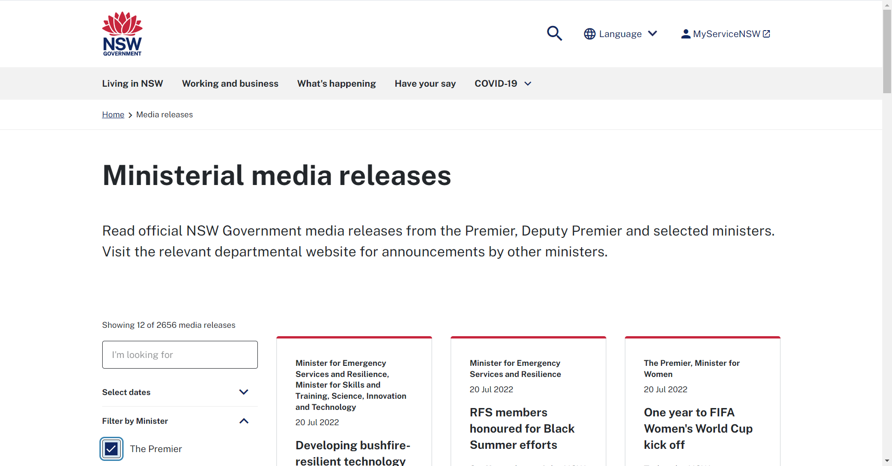And I Click on 'Search' buttoncom.automation.stepDefinition.FilterByMinisterStepDef.addScreenshot(io.cucumber.java.Scenario)Then I validate the item cards are displayedcom.automation.stepDefinition.FilterByMinisterStepDef.addScreenshot(io.cucumber.java.Scenario)
When Select a The Premiercom.automation.stepDefinition.FilterByMinisterStepDef.addScreenshot(io.cucumber.java.Scenario)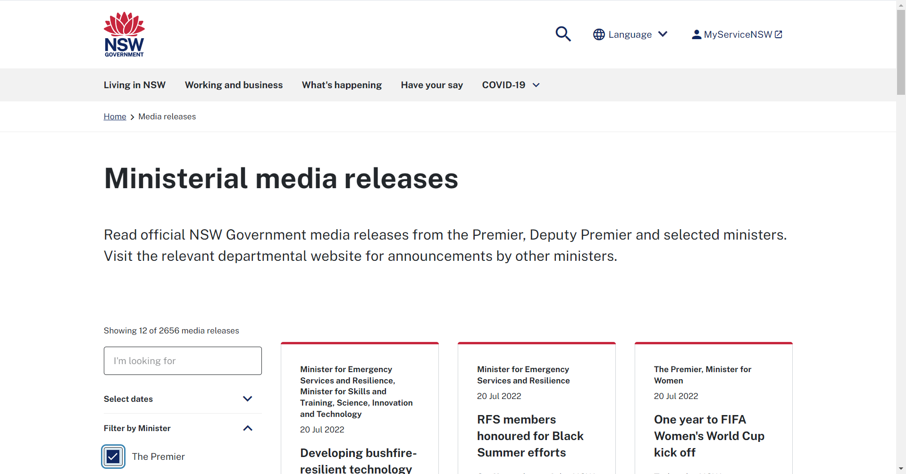And I Click on 'Search' buttoncom.automation.stepDefinition.FilterByMinisterStepDef.addScreenshot(io.cucumber.java.Scenario)Then I validate the item cards are displayedcom.automation.stepDefinition.FilterByMinisterStepDef.addScreenshot(io.cucumber.java.Scenario) And Filtered for the given ministercom.automation.stepDefinition.FilterByMinisterStepDef.addScreenshot(io.cucumber.java.Scenario)
And Filtered for the given ministercom.automation.stepDefinition.FilterByMinisterStepDef.addScreenshot(io.cucumber.java.Scenario) PassVerify the item cards are displayed as filtered by ministerGiven User is in 'NSWGovAu' Pagecom.automation.stepDefinition.FilterByMinisterStepDef.addScreenshot(io.cucumber.java.Scenario)
PassVerify the item cards are displayed as filtered by ministerGiven User is in 'NSWGovAu' Pagecom.automation.stepDefinition.FilterByMinisterStepDef.addScreenshot(io.cucumber.java.Scenario) When Select a Deputy Premier,The Premiercom.automation.stepDefinition.FilterByMinisterStepDef.addScreenshot(io.cucumber.java.Scenario)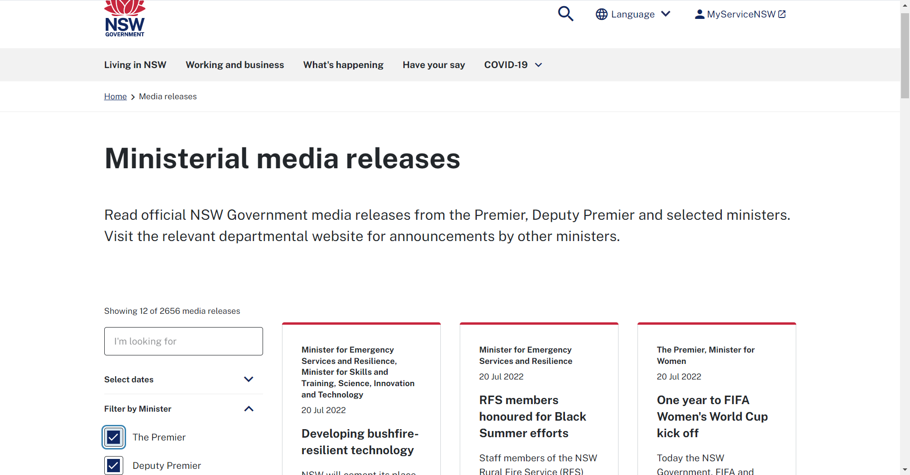And I Click on 'Search' buttoncom.automation.stepDefinition.FilterByMinisterStepDef.addScreenshot(io.cucumber.java.Scenario)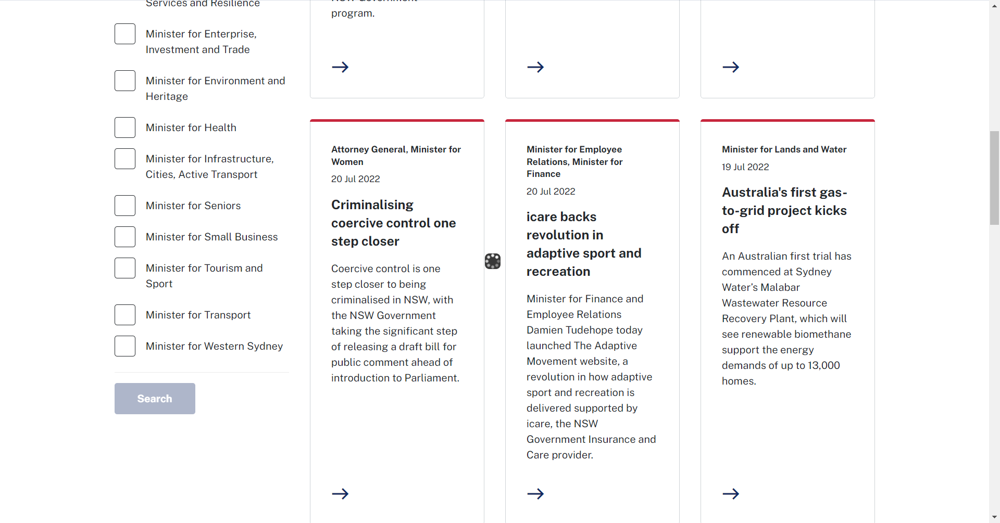Then I validate the item cards are displayedcom.automation.stepDefinition.FilterByMinisterStepDef.addScreenshot(io.cucumber.java.Scenario)
When Select a Deputy Premier,The Premiercom.automation.stepDefinition.FilterByMinisterStepDef.addScreenshot(io.cucumber.java.Scenario)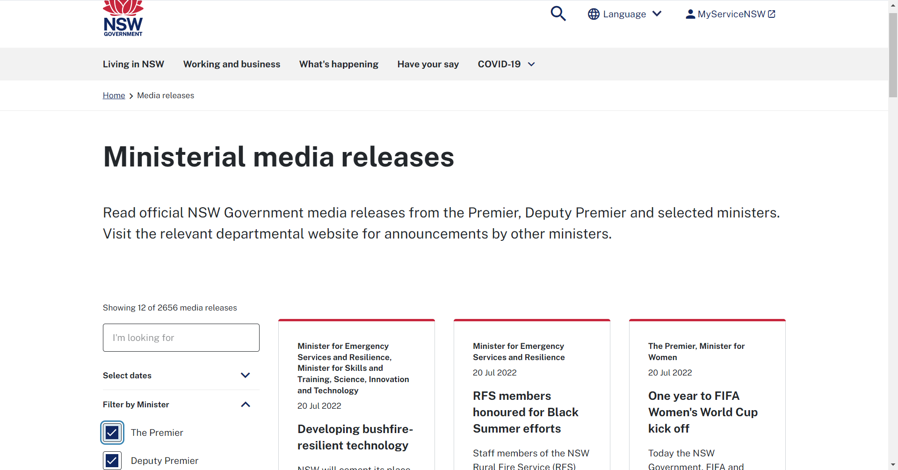And I Click on 'Search' buttoncom.automation.stepDefinition.FilterByMinisterStepDef.addScreenshot(io.cucumber.java.Scenario)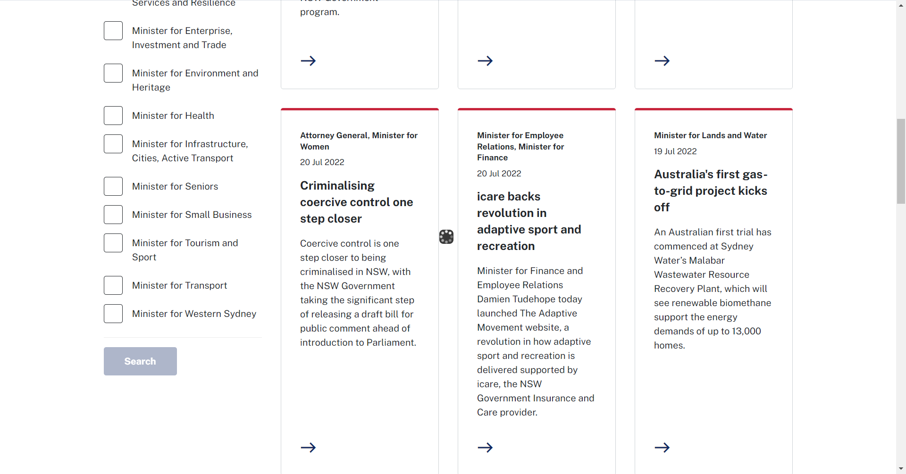Then I validate the item cards are displayedcom.automation.stepDefinition.FilterByMinisterStepDef.addScreenshot(io.cucumber.java.Scenario) And Filtered for the given ministercom.automation.stepDefinition.FilterByMinisterStepDef.addScreenshot(io.cucumber.java.Scenario)
And Filtered for the given ministercom.automation.stepDefinition.FilterByMinisterStepDef.addScreenshot(io.cucumber.java.Scenario) PassVerify the item cards are displayed as filtered by ministerGiven User is in 'NSWGovAu' Pagecom.automation.stepDefinition.FilterByMinisterStepDef.addScreenshot(io.cucumber.java.Scenario)
PassVerify the item cards are displayed as filtered by ministerGiven User is in 'NSWGovAu' Pagecom.automation.stepDefinition.FilterByMinisterStepDef.addScreenshot(io.cucumber.java.Scenario) When Select a Minister for Customer Service and Digital Government,Treasurercom.automation.stepDefinition.FilterByMinisterStepDef.addScreenshot(io.cucumber.java.Scenario)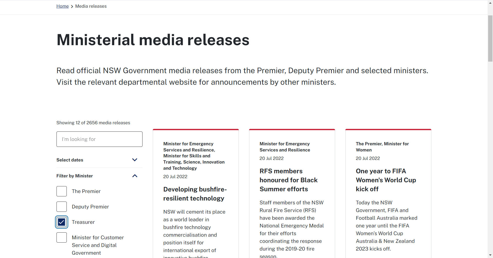And I Click on 'Search' buttoncom.automation.stepDefinition.FilterByMinisterStepDef.addScreenshot(io.cucumber.java.Scenario)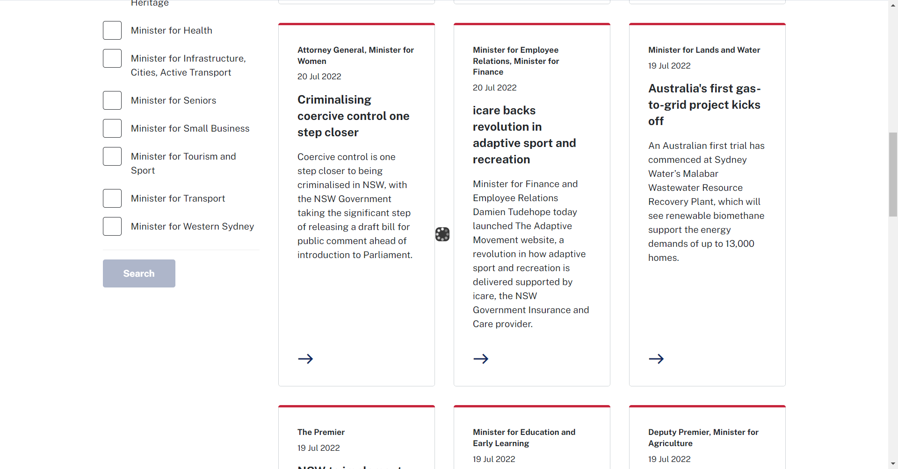Then I validate the item cards are displayedcom.automation.stepDefinition.FilterByMinisterStepDef.addScreenshot(io.cucumber.java.Scenario)
When Select a Minister for Customer Service and Digital Government,Treasurercom.automation.stepDefinition.FilterByMinisterStepDef.addScreenshot(io.cucumber.java.Scenario)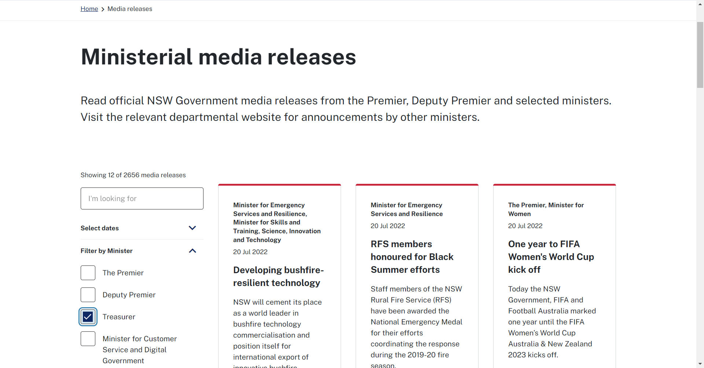And I Click on 'Search' buttoncom.automation.stepDefinition.FilterByMinisterStepDef.addScreenshot(io.cucumber.java.Scenario)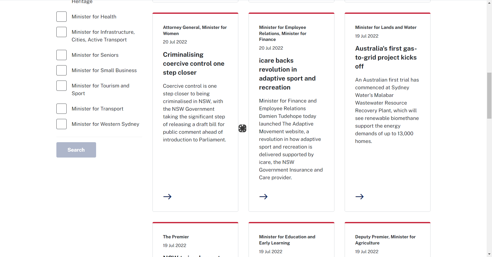Then I validate the item cards are displayedcom.automation.stepDefinition.FilterByMinisterStepDef.addScreenshot(io.cucumber.java.Scenario) And Filtered for the given ministercom.automation.stepDefinition.FilterByMinisterStepDef.addScreenshot(io.cucumber.java.Scenario)
And Filtered for the given ministercom.automation.stepDefinition.FilterByMinisterStepDef.addScreenshot(io.cucumber.java.Scenario) FailVerify the item cards are displayed as filtered by ministerGiven User is in 'NSWGovAu' Pagecom.automation.stepDefinition.FilterByMinisterStepDef.addScreenshot(io.cucumber.java.Scenario)
FailVerify the item cards are displayed as filtered by ministerGiven User is in 'NSWGovAu' Pagecom.automation.stepDefinition.FilterByMinisterStepDef.addScreenshot(io.cucumber.java.Scenario) When Select a Treasurer,JunkAnd I Click on 'Search' buttonStep skippedThen I validate the item cards are displayedStep skippedAnd Filtered for the given ministerStep skippedPassVerify the item cards are reset and filter is removed.PassVerify the item cards are reset and filter is removed.Given User has filtered by The Premiercom.automation.stepDefinition.FilterByMinisterStepDef.addScreenshot(io.cucumber.java.Scenario)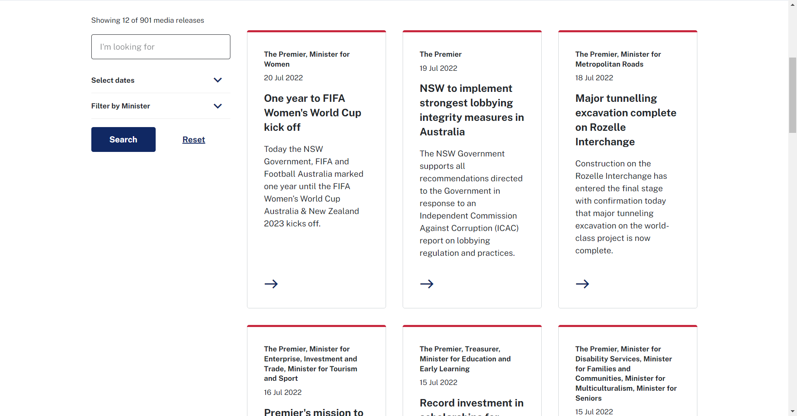When I click on 'Reset' buttoncom.automation.stepDefinition.FilterByMinisterStepDef.addScreenshot(io.cucumber.java.Scenario)
When Select a Treasurer,JunkAnd I Click on 'Search' buttonStep skippedThen I validate the item cards are displayedStep skippedAnd Filtered for the given ministerStep skippedPassVerify the item cards are reset and filter is removed.PassVerify the item cards are reset and filter is removed.Given User has filtered by The Premiercom.automation.stepDefinition.FilterByMinisterStepDef.addScreenshot(io.cucumber.java.Scenario)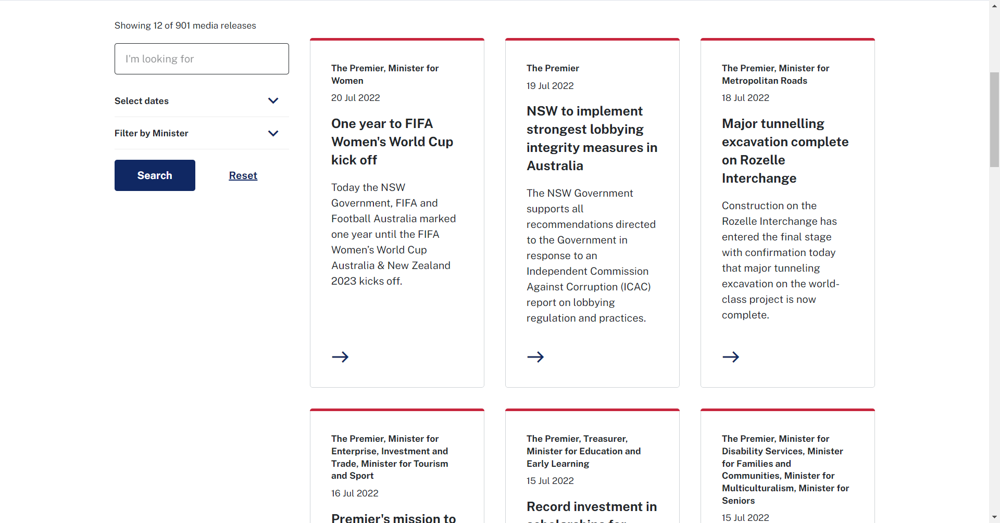When I click on 'Reset' buttoncom.automation.stepDefinition.FilterByMinisterStepDef.addScreenshot(io.cucumber.java.Scenario) Then I verify the 'Reset' button is not visiblecom.automation.stepDefinition.FilterByMinisterStepDef.addScreenshot(io.cucumber.java.Scenario)
Then I verify the 'Reset' button is not visiblecom.automation.stepDefinition.FilterByMinisterStepDef.addScreenshot(io.cucumber.java.Scenario) Then I verify no filters are selectedcom.automation.stepDefinition.FilterByMinisterStepDef.addScreenshot(io.cucumber.java.Scenario)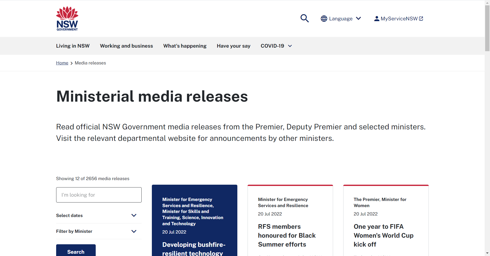Then I validate the filter is removedcom.automation.stepDefinition.FilterByMinisterStepDef.addScreenshot(io.cucumber.java.Scenario)
Then I verify no filters are selectedcom.automation.stepDefinition.FilterByMinisterStepDef.addScreenshot(io.cucumber.java.Scenario)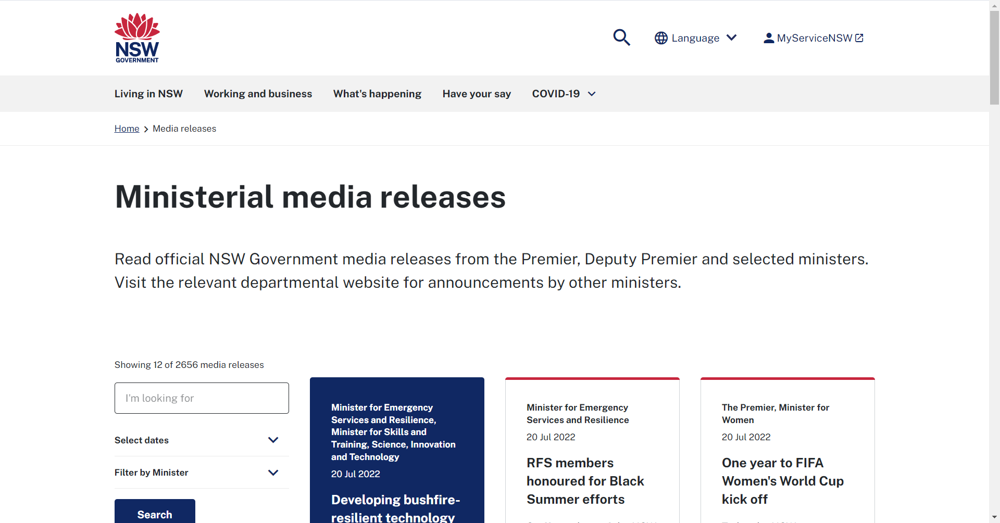Then I validate the filter is removedcom.automation.stepDefinition.FilterByMinisterStepDef.addScreenshot(io.cucumber.java.Scenario) PassVerify the item cards are reset and filter is removed.Given User has filtered by Deputy Premier,The Premiercom.automation.stepDefinition.FilterByMinisterStepDef.addScreenshot(io.cucumber.java.Scenario)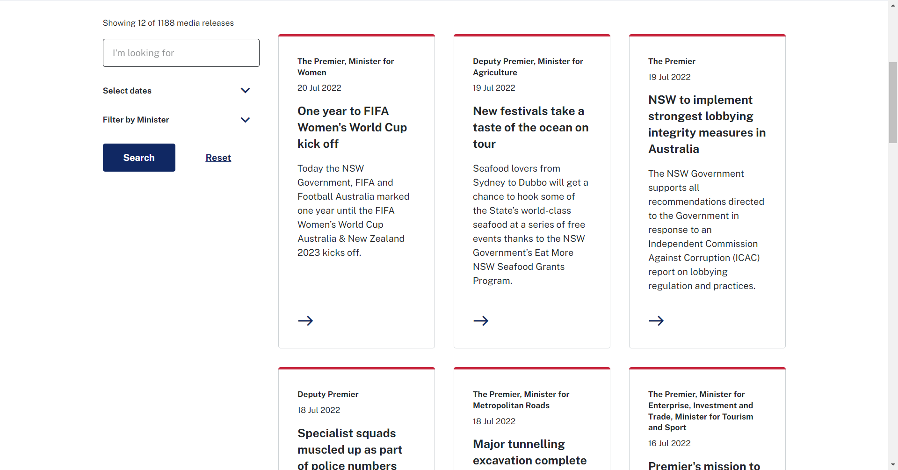When I click on 'Reset' buttoncom.automation.stepDefinition.FilterByMinisterStepDef.addScreenshot(io.cucumber.java.Scenario)
PassVerify the item cards are reset and filter is removed.Given User has filtered by Deputy Premier,The Premiercom.automation.stepDefinition.FilterByMinisterStepDef.addScreenshot(io.cucumber.java.Scenario)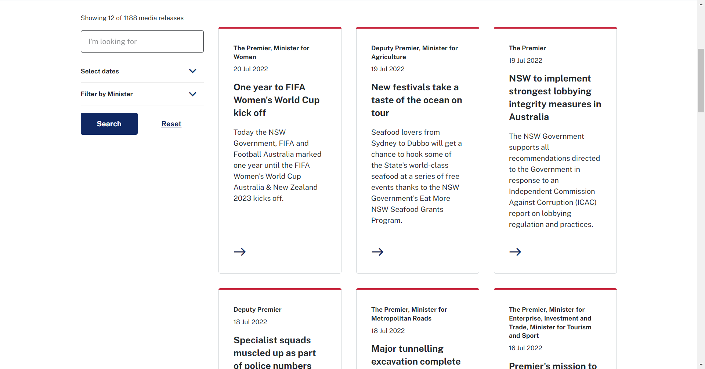When I click on 'Reset' buttoncom.automation.stepDefinition.FilterByMinisterStepDef.addScreenshot(io.cucumber.java.Scenario) Then I verify the 'Reset' button is not visiblecom.automation.stepDefinition.FilterByMinisterStepDef.addScreenshot(io.cucumber.java.Scenario)
Then I verify the 'Reset' button is not visiblecom.automation.stepDefinition.FilterByMinisterStepDef.addScreenshot(io.cucumber.java.Scenario) Then I verify no filters are selectedcom.automation.stepDefinition.FilterByMinisterStepDef.addScreenshot(io.cucumber.java.Scenario)
Then I verify no filters are selectedcom.automation.stepDefinition.FilterByMinisterStepDef.addScreenshot(io.cucumber.java.Scenario) Then I validate the filter is removedcom.automation.stepDefinition.FilterByMinisterStepDef.addScreenshot(io.cucumber.java.Scenario)
Then I validate the filter is removedcom.automation.stepDefinition.FilterByMinisterStepDef.addScreenshot(io.cucumber.java.Scenario) PassVerify the item cards are reset and filter is removed.Given User has filtered by Treasurercom.automation.stepDefinition.FilterByMinisterStepDef.addScreenshot(io.cucumber.java.Scenario)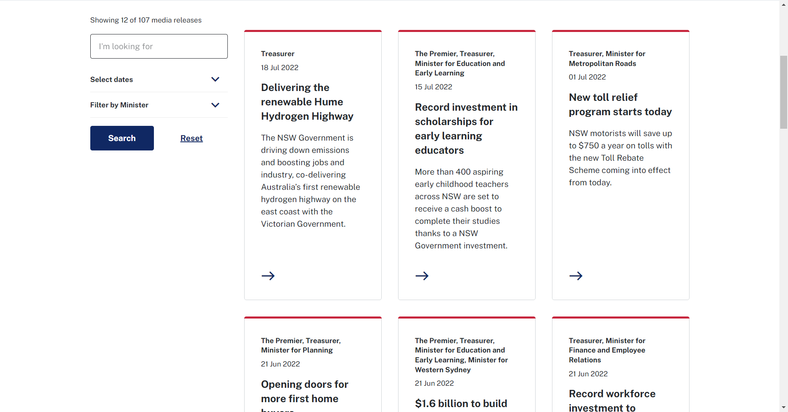When I click on 'Reset' buttoncom.automation.stepDefinition.FilterByMinisterStepDef.addScreenshot(io.cucumber.java.Scenario)
PassVerify the item cards are reset and filter is removed.Given User has filtered by Treasurercom.automation.stepDefinition.FilterByMinisterStepDef.addScreenshot(io.cucumber.java.Scenario)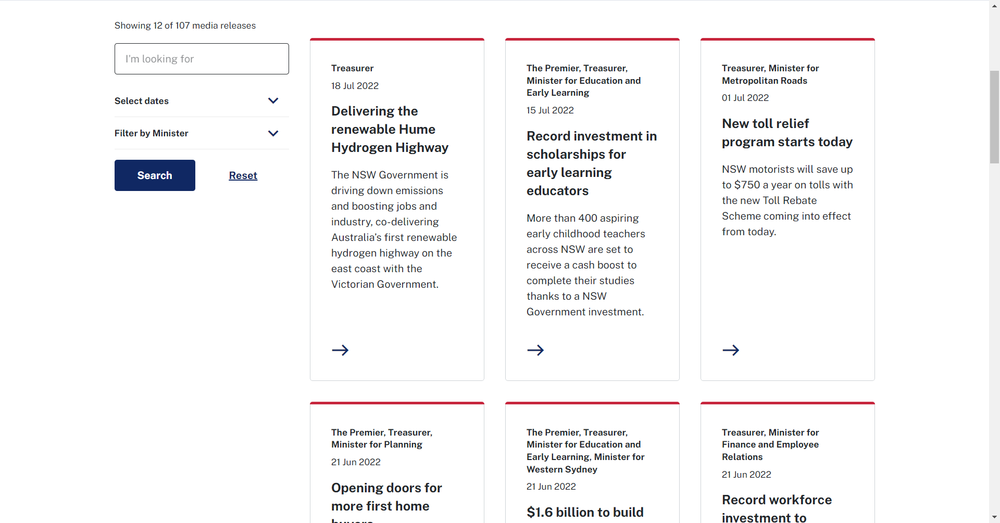When I click on 'Reset' buttoncom.automation.stepDefinition.FilterByMinisterStepDef.addScreenshot(io.cucumber.java.Scenario) Then I verify the 'Reset' button is not visibleThen I verify no filters are selectedcom.automation.stepDefinition.FilterByMinisterStepDef.addScreenshot(io.cucumber.java.Scenario)
Then I verify the 'Reset' button is not visibleThen I verify no filters are selectedcom.automation.stepDefinition.FilterByMinisterStepDef.addScreenshot(io.cucumber.java.Scenario) Then I validate the filter is removedcom.automation.stepDefinition.FilterByMinisterStepDef.addScreenshot(io.cucumber.java.Scenario)
Then I validate the filter is removedcom.automation.stepDefinition.FilterByMinisterStepDef.addScreenshot(io.cucumber.java.Scenario) PassVerify the item cards are reset and filter is removed.Given User has filtered by Minister for Customer Service and Digital Governmentcom.automation.stepDefinition.FilterByMinisterStepDef.addScreenshot(io.cucumber.java.Scenario)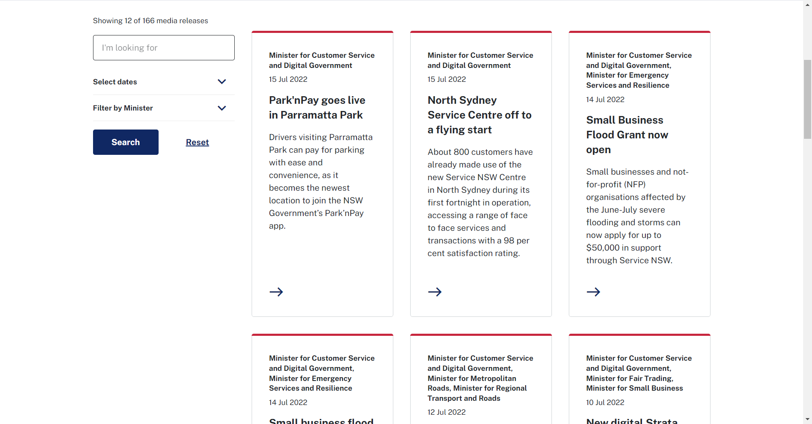When I click on 'Reset' buttoncom.automation.stepDefinition.FilterByMinisterStepDef.addScreenshot(io.cucumber.java.Scenario)
PassVerify the item cards are reset and filter is removed.Given User has filtered by Minister for Customer Service and Digital Governmentcom.automation.stepDefinition.FilterByMinisterStepDef.addScreenshot(io.cucumber.java.Scenario)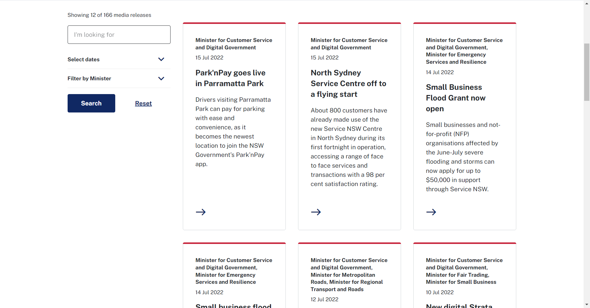When I click on 'Reset' buttoncom.automation.stepDefinition.FilterByMinisterStepDef.addScreenshot(io.cucumber.java.Scenario) Then I verify the 'Reset' button is not visiblecom.automation.stepDefinition.FilterByMinisterStepDef.addScreenshot(io.cucumber.java.Scenario)
Then I verify the 'Reset' button is not visiblecom.automation.stepDefinition.FilterByMinisterStepDef.addScreenshot(io.cucumber.java.Scenario) Then I verify no filters are selectedcom.automation.stepDefinition.FilterByMinisterStepDef.addScreenshot(io.cucumber.java.Scenario)
Then I verify no filters are selectedcom.automation.stepDefinition.FilterByMinisterStepDef.addScreenshot(io.cucumber.java.Scenario) Then I validate the filter is removedcom.automation.stepDefinition.FilterByMinisterStepDef.addScreenshot(io.cucumber.java.Scenario)
Then I validate the filter is removedcom.automation.stepDefinition.FilterByMinisterStepDef.addScreenshot(io.cucumber.java.Scenario)
-
org.openqa.selenium.NoSuchElementException
1 tests
org.openqa.selenium.NoSuchElementException
1 failedStatus Timestamp TestName Fail 20:41:07 PM When Select a Treasurer,Junk Filter By Minister.Verify the item cards are displayed as filtered by minister.When Select a Treasurer,Junk
-
@FilterTest
9 tests
@FilterTest
7 passed 2 failedStatus Timestamp TestName Fail 20:39:45 PM Filter By Minister Pass 20:39:45 PM Verify the item cards are displayed as filtered by minister Filter By Minister.Verify the item cards are displayed as filtered by ministerPass 20:40:07 PM Verify the item cards are displayed as filtered by minister Filter By Minister.Verify the item cards are displayed as filtered by ministerPass 20:40:29 PM Verify the item cards are displayed as filtered by minister Filter By Minister.Verify the item cards are displayed as filtered by ministerFail 20:40:47 PM Verify the item cards are displayed as filtered by minister Filter By Minister.Verify the item cards are displayed as filtered by ministerPass 20:41:12 PM Verify the item cards are reset and filter is removed. Filter By Minister.Verify the item cards are reset and filter is removed.Pass 20:41:38 PM Verify the item cards are reset and filter is removed. Filter By Minister.Verify the item cards are reset and filter is removed.Pass 20:42:00 PM Verify the item cards are reset and filter is removed. Filter By Minister.Verify the item cards are reset and filter is removed.Pass 20:42:24 PM Verify the item cards are reset and filter is removed. Filter By Minister.Verify the item cards are reset and filter is removed. -
@FilterByMinister
5 tests
@FilterByMinister
3 passed 2 failedStatus Timestamp TestName Fail 20:39:45 PM Verify the item cards are displayed as filtered by minister Filter By Minister.Verify the item cards are displayed as filtered by ministerPass 20:39:45 PM Verify the item cards are displayed as filtered by minister Filter By Minister.Verify the item cards are displayed as filtered by ministerPass 20:40:07 PM Verify the item cards are displayed as filtered by minister Filter By Minister.Verify the item cards are displayed as filtered by ministerPass 20:40:29 PM Verify the item cards are displayed as filtered by minister Filter By Minister.Verify the item cards are displayed as filtered by ministerFail 20:40:47 PM Verify the item cards are displayed as filtered by minister Filter By Minister.Verify the item cards are displayed as filtered by minister -
@ResetTheFilter
5 tests
@ResetTheFilter
5 passedStatus Timestamp TestName Pass 20:41:12 PM Verify the item cards are reset and filter is removed. Filter By Minister.Verify the item cards are reset and filter is removed.Pass 20:41:12 PM Verify the item cards are reset and filter is removed. Filter By Minister.Verify the item cards are reset and filter is removed.Pass 20:41:38 PM Verify the item cards are reset and filter is removed. Filter By Minister.Verify the item cards are reset and filter is removed.Pass 20:42:00 PM Verify the item cards are reset and filter is removed. Filter By Minister.Verify the item cards are reset and filter is removed.Pass 20:42:24 PM Verify the item cards are reset and filter is removed. Filter By Minister.Verify the item cards are reset and filter is removed.
Started
Jul 20, 2022 08:39:45 PM
Ended
Jul 20, 2022 08:42:56 PM
Features Passed
0
Features Failed
1
Features
Scenarios
Steps
Timeline
Tags
| Name | Passed | Failed | Skipped | Others | Passed % |
|---|---|---|---|---|---|
| @FilterTest | 7 | 2 | 0 | 0 | 77.778% |
| @FilterByMinister | 3 | 2 | 0 | 0 | 60% |
| @ResetTheFilter | 5 | 0 | 0 | 0 | 100% |